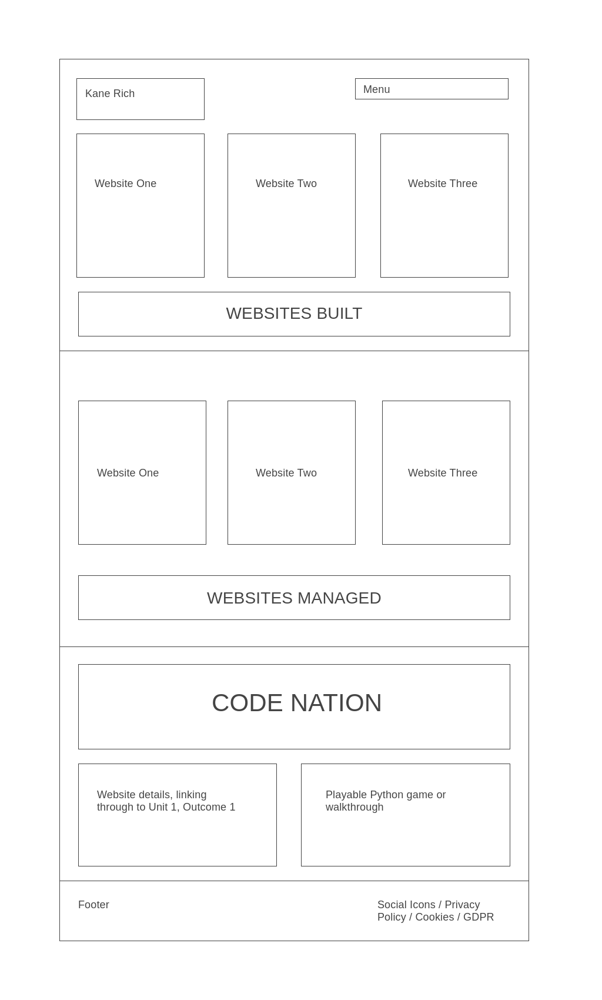
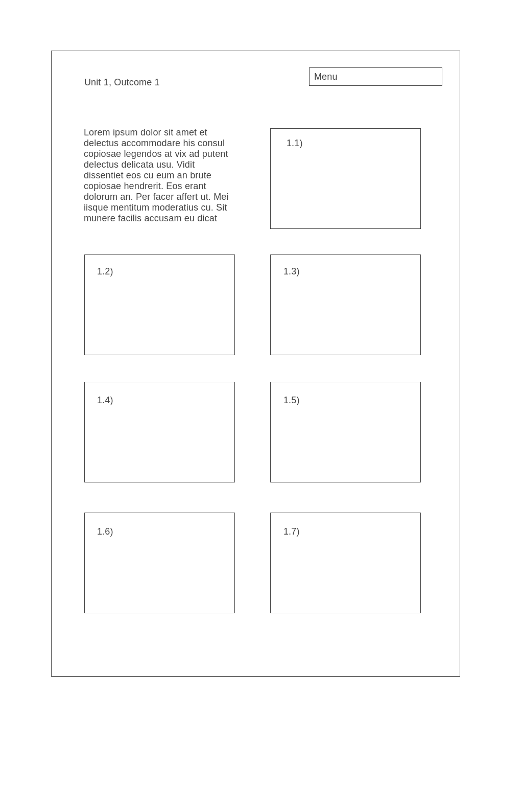
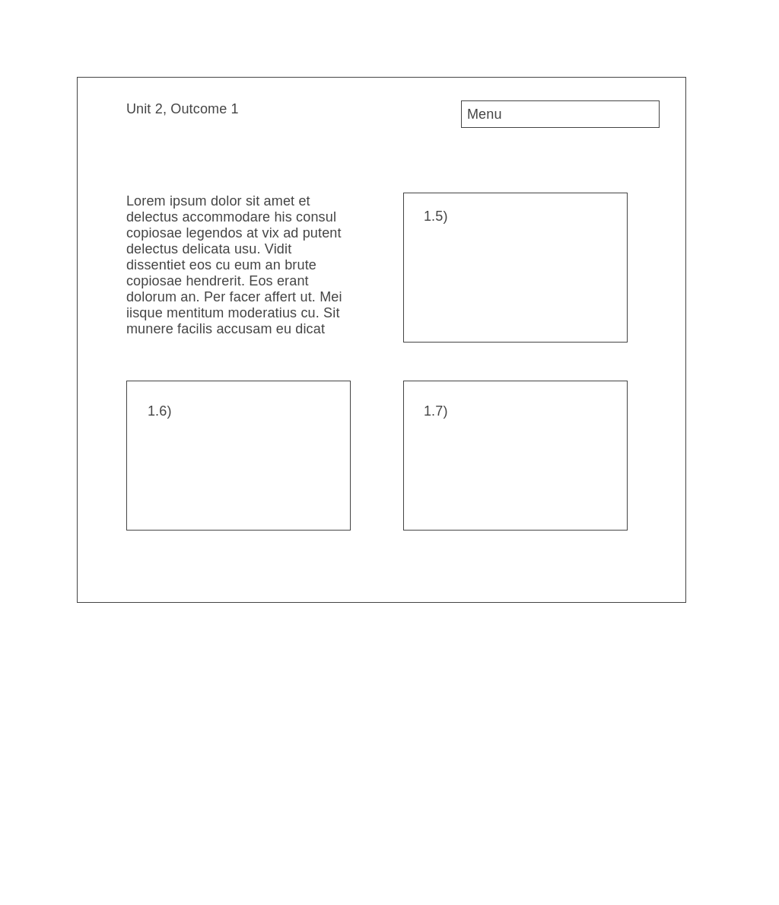

"IT has dramatically changed the lives of the individuals and organisations. Online shopping, digital marketing, social networking, digital communication and cloud computing etc are the best examples of the change to our day to day. Now accurate business planning, effective marketing, global sales, systematic management, real time monitoring, instant customer support and long term business growth cannot be achieved at the optimum level without IT."[1]
There are several modern project management methodologies which can be applied to a digital project, and the skills and tools that underpin them are interchangable. Some of the most popular include: Kanban (which we have utilised throughout the Develop Coding course), Agile, Scrum, Scrumban, Lean, eXtreme Programming, Waterfall, PRINCE2 and PMI's PMBOK amongst others.[1]
These methodologies encourage the following skills: collaboration, enabling a fast delivery of a project, organisation, streamlining and elminating waste, limiting work in progess and focusing attention on the task in hand, effective planning, and robust development.
Some of the best tools for completing a digital project are the following: Google has proven to be the leader in collaborative Office tools, enabling cloud access of Google Documents, Slides, Spreadsheets and Drive storage. Alongside these, the following programs are strong in their respective areas:
To-Do Lists: Asana
Workflow: Trello, Jira
Milestones/Gantt Charts: Aha!, LiquidPlanner
Time Tracking: Paymo
Collaboration: Basecamp, ActiveCollab
File Sharing: WeTransfer/Dropbox
Communication: Microsoft Teams/Zoom/Google Hangouts [2]
I began to plan my website by drawing an initial sketch on paper. I wanted a website that will serve as a portfolio for my web development and include links to previous website projects as the foundation of the site, before rolling out into specifics around the Code Nation course including the outcomes/answers.
Within Activity(2) assignment pages, I drew out an initial sitemap of one Intro page for the above, including sections for Websites Built / Websites Maintained / Code Nation Course, with the Code Nation course section linking through to two stand alone pages for each Unit Outcome.
As of Monday 8th, I wanted the Unit Outcome questions to be styled like Trello cards, with a responsive roll-over to reveal the answer and references. On Tuesday 9th I created a wireframe of all three pages on wireframe.cc as I began to flesh out my design.
Some of the key reasons why digital projects fail stem down to colloboration and communication. Often, it can be difficult to find a client and a vendor who are speaking the same language about what is required, and what can be delivered, especially when factoring in time and money.
"Beyond collaboration, there are a few specific risks worth looking out for when it comes to digital projects:
Ignoring business processes
Failing to secure complete executive buy-in
Investing in sizzle instead of solving business objectives or improving customer experiences
Poor project definition / expectation setting
Bad vendor selection"[1]
The main thing to focus on in using IT systems and software is the requirements for the project and this depends whether you are completing a project for yourself or for a client.
If for a client, the right way to start is understanding the customers needs and that will inform how you select the software/technology.
Some considerations include:
"1. Complexity Type of the Web Application
2. Size of Project
3. Security
4. Time to Market
5. Scalability
6. Bug Testing
7. Web App Development Cost
8. Maintainability
9. Developer Community & Documentation
10. Licenses
Things to Avoid While Picking a Tech Stack:
Copying Competitors
Depending On Personal Choices
Following Trends with No Research
Online Research"[1]
Trello has helped me plan by providing the structure of the 'To Do', 'Doing', 'Done' Kanban methodology, and enabling an easy visual workflow to keep myself on track.
Using the Wireframe.cc website enabled me to visualise how the website would look, and doing it in this way made it easier to understand how many div tags would be needed for each individual section/box.
git and GitHub can be an effective way of monitoring and building on your code, as it enables other developers access to your code and enables them to add their expertise and collaborate on projects more easily. It also offers a learning opportunity from the social network, as "members can follow each other, rate each other's work, receive updates for specific projects and communicate publicly or privately."[1]
GDPR is the General Data Protection Regulations which came into force in 2018. As web developers, you become a controller of a person's online data when they browse the site via data collected automatically (as cookies), or manually (when inputting details on a data capture form.)
"All contributors to a project, whether they are employees, contractors, or volunteers, will be expected to be competent in, at the very least:
The European data protection and privacy frameworks (GDPR and ePD);
Any additional local, regional, or national privacy laws;
Any industry- or sector-specific data requirements, such as those in the health and financial service industries; and
Any development frameworks and methodologies used as standard within the workplace."[1]
I've found Trello to be useful, but it is only as useful as the information you put in and you need to have a process on how you will go about using it to track tasks before you start, as sometimes I would create a card for a more individual task, but then other tasks I've tracked have been larger goals. Visual Studio Code has been good to use, I would change my approach by learning as much of the keyboard shortcuts as possible to try to be as efficient as I can on my next project.
In the past, I followed along with a Udemy course on building websites, and the instructor used Brackets. At first, as we started learning Python on VS Code, I found the user interface a bit more tricky to get to grips with than Brackets which might be a bit more beginner friendly, but this may also just have been because I was using the terminal for the first time to run code. Now we're into the website project however I have found VS Code to be effective, and a quick research into how the community feels about both programs shows the reasons for using VS Code over Brackets: here. I found Trello beneficial, but I do feel it works better in a group project so you are able to keep track of what everyone is doing. I may have worked just as efficiently with a pen/paper to-do list and Google Documents for writing content.
Overall I am happy with what I have learned in building this website, as it is the first website I have designed using HMTL and CSS. I'm glad to have picked up a better understanding of using div to create sections, and also a new trick of using CSS Flexbox for creating containers and boxes. However I had initially planned to put all of my Unit Outcome answers onto styled Trello boards on my website - I spent several hours trying to work out how to do this with Flexbox and online research, but I had difficulty making creating individual columns across a page which had one background colour of the container, and then individual boxes within each column which were sized and coloured differently to form the Trello cards. If I had more time I would have persevered with finding a way of getting this to work, so as it stands my Unit Outcome pages are less visually interesting than I had hoped. For this reason I think my website could be improved but I am happy with what I have achieved in the time I had, and with my current level of coding knowledge.
If I had more time I would have persevered with trying to build the Trello style cards/columns for my Unit Outcome pages, and I would also make sure that the website is fully responsive for Computer/Laptop/Tablet/Mobile by using @media queries, though I hope to still have enough time to do this. I became rushed towards the end due to the forthcoming deadline, which meant I encountered issues with my code and VS Code itself, so I had to put all of Unit 1 on one page instead of individual pages. From here I also could have looked to understand how to build a contact form and added this so potential clients could get in touch, and build more pages around the legality elements of the site, explaining privacy policy, cookies, GDPR etc. I would also like to have included a blog so I would be able to continually update with my ongoing learnings study of coding and development!
[1]I feel my work on this website has matched the requirements. I demonstrated good planning by using Trello as the foundation for my work, keeping me on track and enabling me to focus on tasks in hand for efficiency and time management. I used Diagrams.cc to create a wireframe for my website which enabled me to better visualise how I would go about creating containers for sections and how the pages would be structured. Utilising a navigation bar and links to different pages, this enabled me to mirror a typical website's structure so the user is able to navigate the content with ease. I planned the visual element of my site by using https://coolors.co/ to find a colour palette I was happy with, determining which colours would be used for which elements and sticking to this throughout the site. I also decided on my font early on, only using two font styles in order to keep the design minimal. I made sure I styled effectively within my CSS in order to keep these elements uniform across the site. In terms of file storage, I followed the instruction of keeping my files loose in one folder which is different advice to a Udemy course I followed, which put everything (Images, CSS, HTML, JS) into individual folders. Unsure whether this is a preference thing or considered best practice, but I prefered the one folder approach as it requires less work when linking files, and less to break should you move or delete a folder later on which may be linked to your work.
The drawback of using a new IT tool to create anything is that you don't know the functionality as well as you could do, though with 2 and a half weeks of using VS Code I had started to get to grips with the shortcuts we had been taught and also began to find new shortcuts just to speed up my workflow quickly, such as toggling between open tabs of .html files in order to cross reference coding. However learning more keyboard shortcuts in advance of this project would likely have made me more efficient and this is something I would look to do before starting a new project. I'd be interested to see whether creating a website as a team is more efficient, as I know that this is how larger websites would be created and maintained. I do wonder how efficient it would be to have a junior dev in the team though!
Some ways to improve productivity and efficiency include mindfulness tactics, and being disciplined with your own health. It can be tempting to spend hours working without a break, as sometimes you get lost in solving a problem or don't want to lose the productive streak you might be on, however this can lead to longer term burnout. Putting in a 12 hour day every day for weeks will ultimately make you less productive overall than if you put in a 7.5 hour day with routine breaks to keep yourself fresh. It has also been helpful to have designated times through the Code Nation course to take a break and focus on wellness, we've done this with the Tuesday Yoga sessions in the morning, and Friday personal training sessions. I will be more mindful about making sure I am having screen breaks at recommended times to keep myself fresher and more productive overall.
One element that I will be able to take from this project and use to make myself more efficient for the next time I build a website would be the ability to create templates from my previous html and css efforts, so the coding will become more plug and play. Using Slack as a repository for everything coding related would be helpful, even if not working within a team, as you would be able to use the Code Snippet to store any convenient coding templates for reuse. I could also use Slack to store all of my inspiration from other websites, coding techniques to research later, and look to get more use out of the Apps in Slack for productivity.
Testing can be done in the first instance by going over your live website and checking every link for breaks, making sure every line of code works as you intended to, spell checking the site. I would also check the live website on Mobile, Tablet and Laptop as well as computer to make sure that the design is responsive and works on all platforms. Tools such as Google Page Speed checker are also essential to make sure that the coding and images aren't slowing down the website as this will lead to SEO issues with Google penalising websites that have slow loading times. I would also ask someone else to check the website, because when you have been working on any project for a long time you can become blind to certain things which you may have missed.